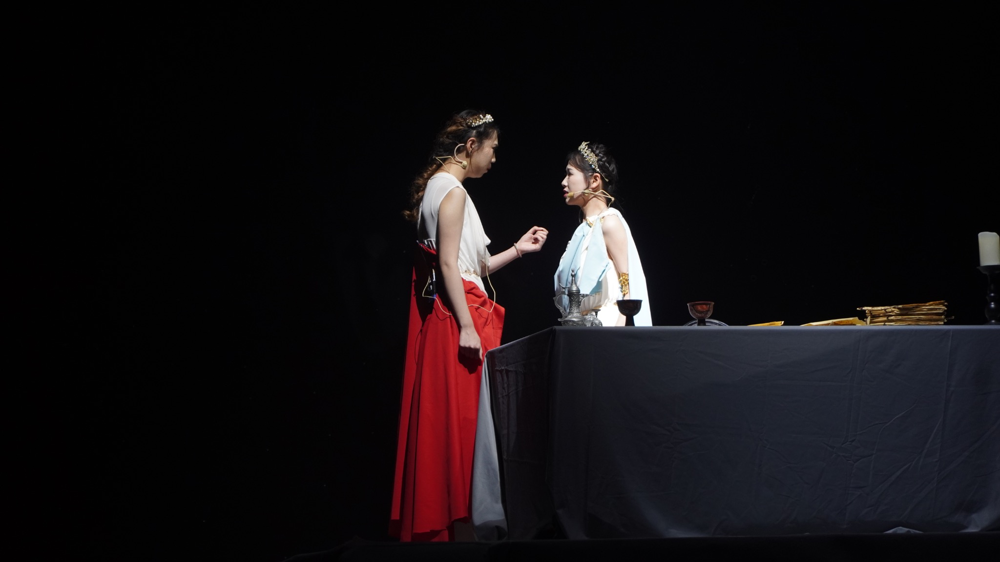
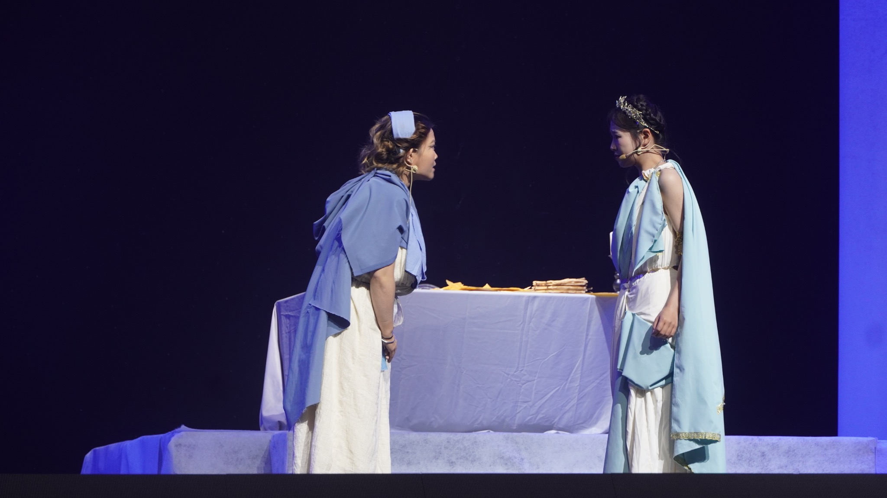
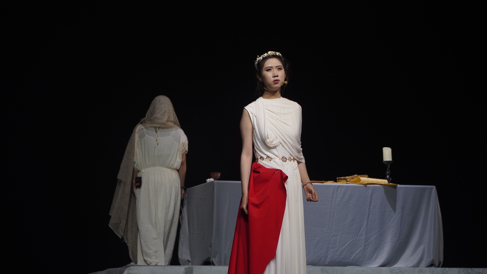
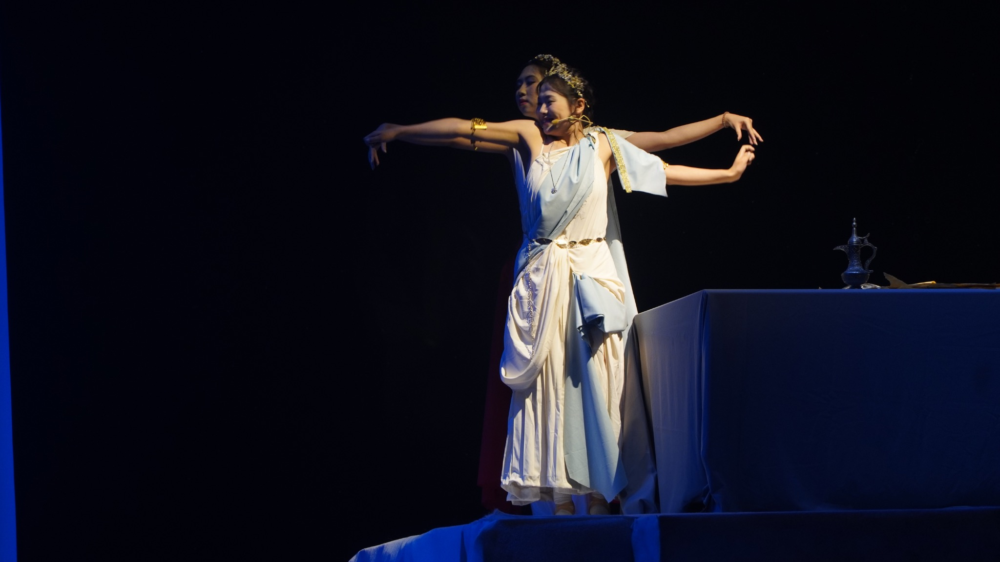
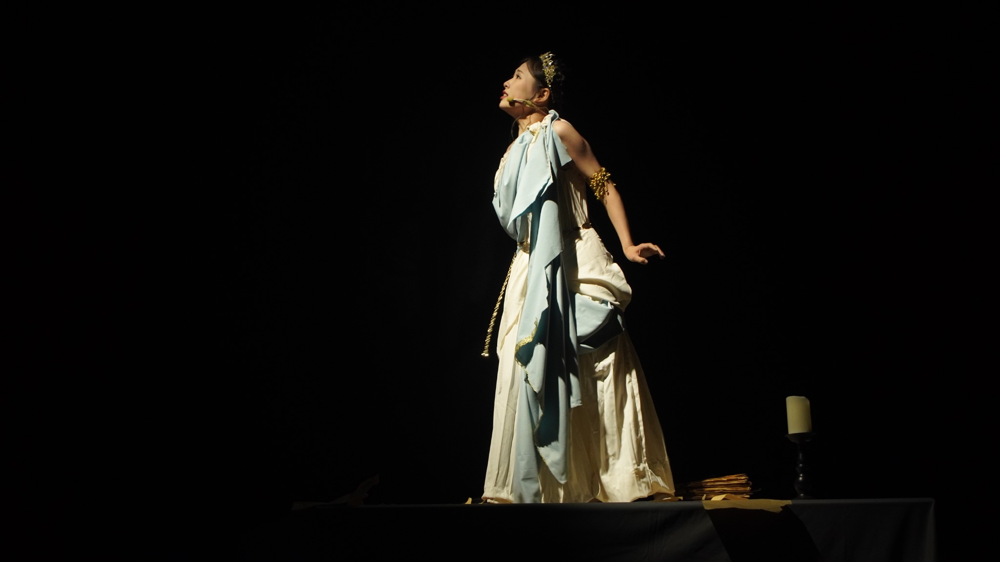
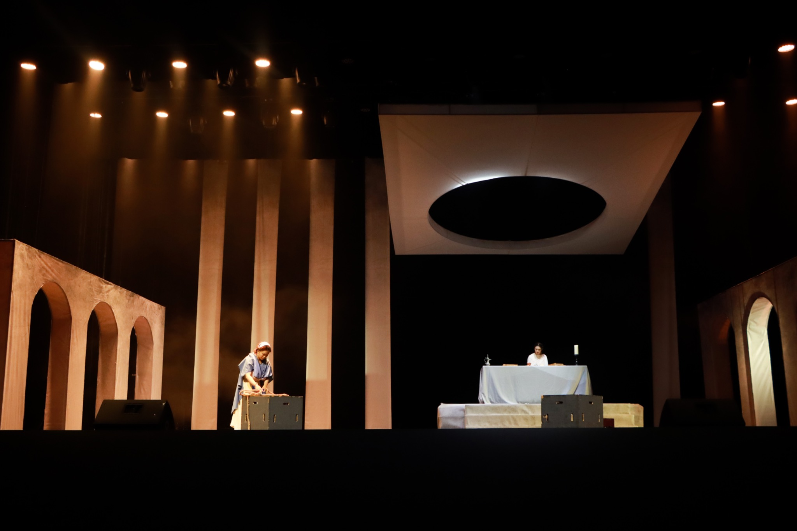

三幕悲剧 · 2023
迷宫
THE LABYRINTH
“英雄的苦难是他们的境遇，人们的苦难是自身的生活。”
记录
广西艺术学院2023届本科毕业生优秀毕业论文奖
第三十六届中国金鸡百花电影节重点配套活动“2023青年编剧大会”戏剧类剧本优秀奖
2026年5月27日首演于晋中信息学院（全女班）
PEOPLE / CREATIVE ARCHIVE
共同在场
迷路的人已经沉寂，同行的人留在回声里。
2026 · 首演版（全女班）
演员阵容
- 朱惠敏
- 饰 代达罗斯
- 王彤昕
- 饰 米诺斯
- 朱笑笑
- 饰 伊卡洛斯
- 张昕
- 饰 克诺利
- 李雯俊
- 饰 先知、侍卫丙
- 段宜君
- 饰 雅典使者、侍卫乙
- 曹之馨
- 饰 雅典国王、代达罗斯之父
- 宋圣炘
- 饰 女祭司、希达罗斯
- 葛梦蝶
- 饰 幼年的代达罗斯 / 长大后的代达罗斯、侍卫甲、小工
制作团队
- 编剧 / 导演
- 侯宇鑫
- 舞美设计
- 郭卓洛
- 音乐音效设计
- 刘阳
- 服化设计
- 吕小静、郭丽琨
- 平面设计
- 陈宽
- 剧目制作总监
- 卞佳艺
- 形体动作排演
- 朱笑笑
- 执行舞监
- 曹之馨、李玥鑫
- 幕后跟组团队
- 奥米琦、吴梦凡、易欣、张亚琪、王瀚淼、崔宇帆、赵嘉敏、李文璇、赵宁静、窦芝、邱若鹏、王金铭、郭锦淼、白子凡、王溪娜、陈永玉、刘思彤、陈梓慧
STILLS / 06
剧照






点击放大 · 小屏可横向滑动